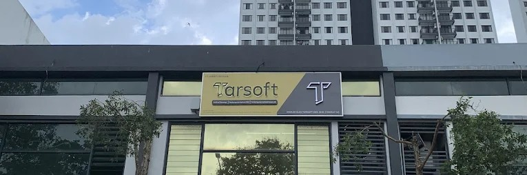

Section 1 of 7
Introduction
An overview of Tarsoft Sdn Bhd and the objectives of this industrial training is presented.
1.1 Industrial Training
Industrial training is a structured program that provides students with practical experience in a real working environment. It helps bridge the gap between theoretical knowledge and real-world industry practices. Through this training, students develop technical skills, soft skills, and professional work ethics.
1.2 Company Background

Tarsoft Sdn Bhd, established in 2020, is a software development company that provides digital solutions including mobile application development, web development, and software systems.
The company serves both local and international clients by delivering solutions based on business requirements. Tarsoft focuses on using modern technologies to support digital processes and business needs.
1.3 Objectives of the Organization
- To provide software and digital solutions
- To support business digital transformation
- To deliver reliable and efficient systems
- To build long-term client relationships
1.4 Vision and Mission
Vision: To be a trusted technology solutions provider.
Mission:
- To deliver quality IT solutions
- To meet client requirements effectively
- To continuously improve through learning
- To build long-term relationships with clients
1.5 Core Strengths
- Experienced development team
- Ability to handle various projects
- Focus on quality and client satisfaction
1.6 Organizational Structure
The organization consists of several departments including Software Engineering, Mobile Application Development, Project Management, and Web Development teams that work together to ensure successful project delivery.

1.7 Department Functions
Software Engineering Department
Responsible for developing, testing, and maintaining
software systems.
Mobile Application Department
Focuses on developing and maintaining mobile
applications.
Project Team
Handles project planning, coordination, and communication.
Web Development Team
Responsible for website development and maintenance.
1.8 Future Plans
- Expand client base
- Improve technology adoption
- Enhance mobile and web development
- Continuously improve service quality
Official Website: https://tarsoft.com.my